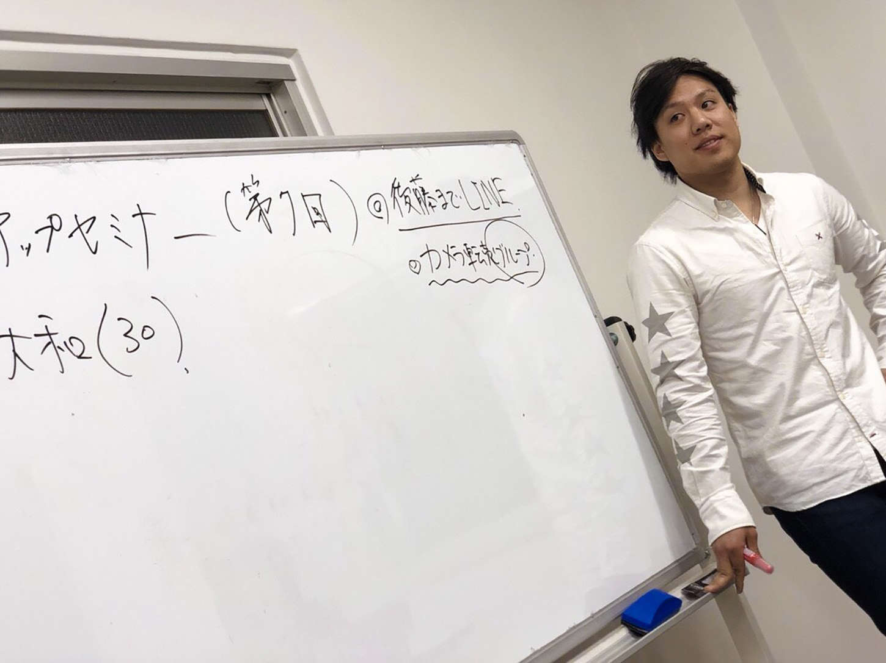

| 今すぐ人生を変える副業バイブル 〜一番簡単・安全に稼げる転売〜 | |
| 遊馬和貴 | |
| Hitotsuku Publication (2018) | |
遊馬和貴
本書を手に取っていただきありがとうございます。私は、物販講師、物販コミュニティ代表として、講師育成、塾生コンサルをやらせていただいている、遊馬和貴と申します。
現代の日本では、多くの方が、自分の仕事のやり方に疑問を感じていると思います。本書を手に取っていただいた方のほとんどが、おそらく会社員であるはずです。会社員でありながら、自分の働き方を変えていかないといけないと思われているからこそ、本書を読む決断をしてくださったと信じています。
しかし、働き方を変えるというものの、改善策がうまく見つからない方が多いはず。自分の働き方に限界を感じるものの、様々な制限がかかり、情報収拾をするけれど、なかなか行動にすら移せない方も多いのではないでしょうか。
稼ぐというワードに抵抗を感じる方も少なくはありませんが、お金はある方がいいに決まっています。お金があれば、選択肢は増えるからです。選択肢の多さは、あなたの人生の豊かさに直結します。つまり、稼ぐことができれば、あなたの人生は豊かになるのです。
稼ぐ力を身につけた時、あなたの人生に革命が起きるでしょう。自由がもたらされるのです。
私は、借金１，０００万円のホームレスから、在庫を持たない転売ビジネスを始めたことで、人生を変えることができました。おそらく、現在のあなたよりも財政的に恵まれていない状況から抜け出し、今の自由な生活を手に入れることができました。
朝６時に起き、満員電車に揺られて会社に出社し、夜10
時以降に疲れたから帰宅するという奴隷的な毎日から、いつでも自分の好きな場所、好きな時間に、好きなだけお金を稼げるようになりました。朝６時に起きる必要も、満員電車に揺られる必要も全くないのです。
そんな人生を、あなたも手に入れたいと思うこともあるのではないでしょうか？ 働き方を変えれば、あなたの人生は変わりますので、諦めないでください。学んでしまえば、いつだって、あなたは自分の働き方を変えることができます。
あなたのために、働き方を変えるヒントを、本書に書き記しました。本書は、ビジネス初心者向けに、「在庫を持たない転売」というビジネスについて解説していく本となります。自分の働き方を変えたいビジネス初心者の方や、学んだ知識を行動に移せない方、そして、自分の人生を豊かにしていきたい方に、読んでいただきたいのです。
本書を読んでいただければ、在庫を持たない転売の基本的な知識がつくはずです。
その知識があれば、稼げるようになるはずです。本書があなた自身の刺激になり、あなたの人生が変れば幸いです。
遊馬和貴

これから在庫を持たない転売を始めた方がいい理由を述べていきたいと思いますが、そもそも在庫を持たない転売とはどういうビジネスか、というところから解説させていただきます。在庫を持たない転売とは、まさに文字通り「在庫を抱えずに、転売するビジネス」
です。ただし、一般的なビジネスとは違うので、少し理解しづらいと思います。
あなたが街中の店舗で見かけるビジネスは、ほとんどの場合、そこに商品がある状態です。店舗で商品を手に取って触ったり、試しに使ってみたりすることができます。そうやって商品を知り、商品の購入に至ります。こういったビジネスは、有在庫ビジネスにあたります。
逆に、インターネットの場合は、実際に商品を見なくても購入することができます。商品のスペック、概要、商品の良いところ、悪いところ、デザイン性などを理解することによって、消費者は商品を買っています。よって、実際に在庫がなくても、消費者は商品を買う
のです。
在庫があると、その在庫をさばかなくてはなりません。売れ残れば赤字です。これだと倒産する恐れもあり、かなりリスキーです。あなたの街の飲食店やブティックといったお店が、気づいたら閉店していた、という経験はありませんか？
会社やお店によっていろんな事情がありますが、大体の場合は、「自分たちが抱えている商品の在庫を売れきれなく、利益を出せなかったから」という理由が、挙げられると思います。今現在、有在庫ビジネスで生き残っている店舗や会社は、経営者が優秀だったり業界が伸びていたり、運が良かったりするから、生き残っているのです。有在庫ビジネスは非常に難しいのです。
在庫を持たない転売では在庫を仕入れる必要はないので、その分、初期費用がだいぶ抑えられます。それに加え、在庫を抱える必要がないので、在庫をさばかなくても赤字になることはありません。ですので、在庫を持たない転売は、自分でビジネスをやったこともお金もない、会社員や学生の方でも始めることのできるビジネスとなります。
そう考えると、在庫を持たない転売は、ビジネスセンスがなくてもマイナスにはならない
と言えます。そして、きちんと学べば在庫を持たない転売では、誰でもお金が稼げる
のです。
実際、有在庫だと、初期費用が必要で初めに仕入れる必要があるので、ものすごく仕入れのリスクが大きいのです。特に初心者は、何が売れるかわかりませんので、仕入れるスピードがあまり速くありません。私も経験があるのですが、仕入れるのがすごく怖くなってしまい、不安が大きくなります。
ですが、初期費用がほぼない在庫を持たない転売をしていけば、リスクほぼ無しで稼ぐことが可能
なのです。早い方で、初月10
万円稼げるものです。それに、リスクのない在庫を持たない転売をやっていくことで、あなたのビジネス経験値は増えていきます。何が売れるか、何をどうすればより高く売れるのかが、手に取るように分かるようになるからです。
以上の理由から、他のやりたいビジネスや好きなこと、叶えたい夢などがあれば、誰でもできる在庫を持たない転売を、まずやってみればいいと思います。
では、在庫を持たない転売をやっていく上で、必要なツールは何でしょうか。有在庫ビジネスと比較していきましょう。
有在庫ビジネスであれば、あらかじめ在庫の仕入れ先にお金を支払い、商品を仕入れます。そして、その仕入れた商品を保管する場所や、販売する場所が必要となり、その場所の確保、維持にも、お金や時間を費やさないといけません。この時点でリスクがありますよね。始める前からリスクが自分の肩にかかってくるのが、有在庫ビジネスの最大のデメリットです。
反対に在庫を持たない転売は、あらかじめ商品を仕入れる必要がないので、仕入れのためのお金はかからないと、先述しました。そして、商品の販売場所や保管、維持の必要もないので、ランニングコスト（ビジネスをやっていく上でかかる維持費や、経費のこと）を抑えることができます。有在庫ビジネスでは必要なことが、在庫を持たない転売では不要になる
のです。
在庫を持たない転売では、パソコンとネット環境があれば、お金を稼ぐことができます。商品の販売所として、インターネットオークションサイトやフリーマーケットアプリを、利用します。
いずれもビジネスを始めるためには、会員になる必要があり、毎月決められた費用を払うのですが、維持費としてはかなり安い方です。携帯代よりも、はるかに少ない費用がかかるだけでビジネスができる
、と考えていただければと思います。
売上の管理や在庫の管理でパソコンが必要ですが、本書を読まれているあなたは、おそらくパソコンを持っていると思います。今手元にあるパソコンで、在庫を持たない転売ができる
のです。そう考えると、ビジネスを始めるハードルが一気に下がった気はしませんか？
在庫を持たない転売は、新規参入しやすいビジネスの特徴を兼ね備えています。「ホリエモン」こと堀江貴文さんによれば、確実に上手くいくビジネスの特徴は４つあると言われています。
①
小資本で始められる
②
在庫を持たない
③
定期的な収入が入る
④
利益率が高い
実は、在庫を持たない転売はこの４つの特徴を兼ね備えているビジネス
なのです。よって、在庫を持たない転売は上手くいきやすいビジネスになるのですが、ここではその４つの特徴を１つずつ吟味していきましょう。
①
小資本で始められる
損益分岐点（そんえきぶんきてん）という言葉を聞いたことがあるでしょうか？ これは、「売上高と費用の額がちょうど等しくなる、売上高または販売数量」を指します。経費のかかる有在庫ビジネスでは、初期費用がかかると先述しました。初期費用がかかるということは、お金の準備をしなくてはならない上に、その初期費用を取り返すまでに時間がかかります。それと比べ、在庫を持たない転売の初期費用は、ほぼ無いに等しいので、初期費用を取り返すのは非常に簡単
です。損益分岐点を超えるのが早いビジネスなのです。
②
在庫を持たない
在庫は入手するのにも、お金がかかります。ものが売れないと言われているこの時代では、売れる保証がないため、在庫を抱えて販売するやり方は賢くないと言えるでしょう。それに、商品には流行り廃りがありますので、一度タイミングを逃してしまうと、仕入れた商品の販売が難しくなったり、販売価格が低くなったりしてしまいます。これに対し、在庫を持たない転売は今現在売れている商品を、仕入れず販売して利益を上げるビジネス
となります。
③
定期的な収入が入る
どこかに店舗を構えるとなると、その店舗までお客様が来ないと商売になりません。それだけでハードルは上がってしまいます。なぜかというと、飲食店やブティックでは、常連客を作るのは難しいのが現状です。リピートをしてくれる保証はありません。それに、天候や周りの道路や建物といった環境に、決定的に影響を受けます。それゆえに、利益を安定的に上げることは難しいでしょう。ですが、在庫を持たない転売はネットを使うビジネスです。ネットでは、日本中の人があなたの商品を見ることができ、天候や周りの物理的な環境に左右されることはないので、在庫を持たない転売では定期的な収入を上げやすい
のです。
④
利益率が高い
先述したように、在庫を抱える店舗を構えなきゃいけない飲食店やブティックなどは、毎月決まった維持費、商品仕入れ費用、人件費が、経費としてかかってきます。そういった経費を気にしながら、売上を上げていかないと、お店は潰れてしまいます。売上の中から、次にかかる経費を引かなくてはならないため、経費を上回る売上を上げていかないといけません。利益率を高くしなくてはならないのです。逆に、在庫を持たない転売には、経費は全くと言っていいほどかからないので、売上そのものがほぼ自分の利益になる
のです。
このように、稼ぎやすいビジネスにもルールがあります。ほとんどの方が、このルールを知らないのではないでしょうか。あなたが会社員やフリーターであれば、今自分のやっている仕事について思い浮かべたはず。おそらくあなたの会社、勤め先は、有在庫ビジネスの形を取っていると思います。それと比べながら、本書を読んでいただければ、どれだけ在庫を持たない転売がいいものかが、わかっていただけると思います。
突然ですが、ビジネスの本質とは何かをご存知ですか？ ビジネスの本質とは、「価値」と「お金」の交換
なのです。お客は、商品に価値を感じるから、商品の提供者にお金を払います。自分にとっていい商品を得るから、お金を支払うのです。
想像してみてほしいのですが、例えばあなたが飲食店に行って、そのお店のメニューやサービスに満足すれば、そのお店に進んでお金を払いたいと思うはずです。満足できるからこそ、もう一度そこに行きたいと思うのではないか、と私は思います。では、そのお店の飲食がまずかったら、あなたはどう思うのでしょう？
おそらく、「もう二度と行きたくない」「お金を払いたくない」と思ってしまうはずです。つまり、買う側が満足し、売る側がお金を得るのが、ビジネスの本質
です。
実は、転売ビジネスもビジネスの本質を突いています。転売ビジネスでは、お客は、自分の商品を見つけてもらい、それに価値を感じて買ってもらいます。売る側であるあなたは、自分の商品に価値を感じてくれるお客からお金を得て、その商品をお客に渡すことになります。お客に満足感を与えて利益を上げるので、在庫を持たない転売は立派なビジネス
です。
ビジネスというと、あなたは難しいと思われがちですが、ビジネスはこのようにシンプルなものなのです。転売では、「安くて仕入れて、高く売る」ということをして、利益を得ることができます。つまり、10
万円で仕入れたブランド品のバッグを、15
万円で売れば、５万円の利益を得られます。非常にシンプルでわかりやすいのではないでしょうか。
在庫を持たない転売では、通常のビジネスとは全く逆の手順を踏みます。「高く売り、利益を得て、仕入れる」
ということをします。これを聞くと、「在庫を持たない転売は普通のビジネスではない」「難しそう」だと思われてしまうかもしれません。ですが、在庫を持たない転売に、才能・スキルは全くもって必要ありません
。理由は主に大きく４つあります。
①
実際に店舗やオフィスを構える必要がない
店舗やオフィスを構えるビジネスでは、経営の手腕がモノを言います。経営の仕方が悪ければ、利益を上げられずに倒産してしまいます。ですが、在庫を持たない転売をやるのに、事務所やオフィスは必要ありません。
②
営業をする必要がない
通常、企業やお店で売上を上げるためには、営業活動をしていかなくてはなりません。自分の商品が有名とは限らないのにもかかわらず、営業で売上を上げるには、話す技術などの才能やスキルが必要です。在庫を持たない転売では、大手のフリーマーケットサイトやオークションサイトで販売をしていく上に、すでに売れている商品を取り扱います。勝手に商品が売れていくのです。なので、営業活動をする必要はなく、才能もスキルも必要ないのです。
③
売れている商品を取り扱う
自分の扱っている商品が有名でない場合、営業やコピーライティングに通じていないと、その商品が売れることはまずありません。数々の競合がいる中で、自分の商品を売っていく能力が必要になるのです。ですが、在庫を持たない転売では、今現在売れている商品を売るので、商品を売るにはあまり苦労はしません。
④
お客と会う必要はない
在庫を持たない転売はネットでやるビジネスです。ネット環境さえ整っていれば、お客と会わずに商品を売ることができます。
以上のことから、才能やスキルがなくても、在庫を持たない転売で利益を上げることは、それほど難しいことではない
のです。よって、在庫を持たない転売は、ビジネス初心者でも簡単に続けて、稼ぐことができるビジネスなのです。
在庫を持たない転売は、作業に慣れるまでの間を除き、時間がかかりません。というのは、通常のビジネスで一番手間のかかる、発送作業がないからです。通常の転売では、仕入れた商品が自分の手元に来ます。注文が入ったら、検品や包装をし、郵便局や宅配便で発送しなくてはなりません。かなり時間がかかるでしょう。
しかし、在庫を持たない転売では、商品を売るサイトにはない商品で、他のサイトに出品されているものを出品します。そのサイトで相手の住所を入力すれば、勝手に発送されるのです。例えば、仕入れ元がＡｍａｚｏｎ、販売するサイトがモバオクだとしましょう。
モバオクでＡｍａｚｏｎにある商品を出品します。Ａｍａｚｏｎでは、住所を打ち込めば、直接宛先に発送してくれます。つまり自分の手元に届かなくても、取引は成立するのです。だからこそ、どこでもビジネスができるのです。
これまで、在庫を持たない転売の利点について述べてきました。いかにリスクが少ないビジネスか、わかっていただけたのではないでしょうか。ネット環境さえ整っていれば、そこがあなたの仕事場。カフェでパソコンを使ってぽちぽちと、稼ぐスタイルが取れる
のです。世界中どこにいても、お金は稼ぐことができるのです。
第１章では、売れる商品を売ることが、在庫を持たない転売をやる上で大事なことだと述べました。成功するためには、売れる商品は変わるので、常にリサーチをしていかなくてはなりません。かといって、忙しい思いをすることはありません。包装・発送の作業をしなくても、取引が成立するからでしたね。
ある程度、作業をする必要はあります。ただし、作業といっても、商品のリサーチ、仕入れ元のサイトに宛先の住所を入力するといったものぐらいで、30
分くらいあればできるのです。スキマ時間でお金を稼ぐことができます。
慣れはある程度必要です。しかし、慣れてしまえば、１日30
分だけやっても日給１万円です。月に30
万円も得ることができます。例えば、仕入れ値が２，０００円のものを、販売額２，５００円としましょう。この商品を１日に20
個売れれば、５００×20
=１万円の利益になります。毎日売れれば、月に30
万円。これだけでも、中小企業の課長クラス以上の給料を、手にすることができます
。言い換えれば、１日にもっと多くの時間を費やせば、より稼げるようになります。
在庫を持たない転売を自分のモノにするとどうなるかというと、会社からの一定の評価がないと、昇給できない会社員とは、全く違う生き方ができるようになるのです。朝から晩まで一生懸命働いても、月収30
万円に届かない方も多いでしょう。そういう方には、もし、自分が１日30
分だけ働いても、今の月収と変わらない、もしくは月収以上に稼いでいる、という状況を想像してみてほしいのです。想像しづらいかもしれませんが、あなたは在庫を持たない転売で稼いで余った時間を使って、何をしたいのでしょうか？
今まで忙しくてできなかったものができるようになれば、人生は豊かになりそうではありませんか？ もし、あなたが旅行好きなら、今まで会社で働いていた時間を使って旅行ができるようになります。在庫を持たない転売は、いつでも自分の好きなことができる、自由な生活を送れるようになるビジネス
なのです。
おそらく本書を読まれているあなたは、会社か誰かに雇われて働かれていると思います。ほとんどの方が、雇い主の決められた時間に、出勤退勤を命じられているのではないでしょうか。また、会社が決めた場所に働かされているのでは？ 会社の都合で異動させられた方もいらっしゃることでしょう。本書を読まれているということは、自分の人生の自由や豊かさを、求めていらっしゃると思います。
ネットビジネスというビジネスのジャンルの１つである在庫を持たない転売は、実はそのジャンルの名の通り、ネットで全ての取引が完了するという特徴があります。あなたの知っているビジネスとは、全く違う形態と言えるでしょう。
考えてみてほしいのですが、あなたの周りにあふれている、レストランや売店などを筆頭とする「リアルビジネス」をやるには、人がその場にいないといけません。そして、お客によって働く時間が縛られます。何よりも、一度店舗を構えてしまうと、なかなか簡単に場所を移動できません。
このような制約があるせいで、念願の店舗開業を果たしても、様々な問題のおかげで首が回らない起業家が多いのが、事実です。それに、何百万円もの借金をする必要がありますので、気軽に始められるわけがありません。
ですが、ネットビジネスでは、顧客によってあなたの時間が縛られることはありません。ネットがあればできるビジネスなので、Ｗｉ－
Ｆｉがある環境であれば、どこでもできるのです。ネットビジネスとは、他の人が働いている平日の昼間に、空いているカフェで美味しいコーヒーとお店の雰囲気を楽しみながら、お金を稼ぐことのできるビジネスなのです。
それくらい作業量が少ないので、まとまった時間がなくとも、隙間時間であれば十分に月30
万円は稼げる
でしょう。これがネットビジネスの最大の特徴です。雇われる側より少ない時間で、雇われる側の給料より多くのお金を得られるのが、ネットビジネスというわけです。
ネットビジネスの中でも一番のオススメは、在庫を持たない転売です。私は２０１８年４月末に28
歳になりますが、26
歳の時に人脈、お金、知識がないまま、勢いだけで起業した結果、１，０００万円の借金を抱え、ホームレスになってしまいました。
そんな私が再度起業するに至り、人生の逆転を成功させたのは、在庫を持たない転売をやってきたからこそ
です。そんな私でもできたのですから、これは誰でもできるビジネスだと確信しているのです。一番ノリに乗っているビジネスと思っています。このビジネスへの理解を深めてもらうために、私の経験を深掘りしながら、在庫を持たない転売についてさらに解説していきますので、読み進めてくださいね。
私がよく受ける質問に、次のようなものがあります。
「在庫を持たない転売は飽和しないのですか？」
「たくさんの人がやり始めたら、売れなくなってしまうんじゃないですか？」
結論から言わせてもらうと、そのようなことはありません。なぜなら、商品を売りたい人よりも、商品を買いたい人の方が圧倒的に多い
からなのです。その売買をするサイトをプラットフォームと呼ぶのですが、プラットフォームのテレビコマーシャルといった広告は、近年急速に増えてきています。それに伴い、プラットフォームの利用者が増えてきているのです。
もっとも大きいプラットフォームの１つである、ヤフーオークションの利用者数は、何千万人にも上ります。その中で、商品を売っている人は圧倒的に少ないのです。だから、在庫を持たない転売が飽和することはありません。
もう１つの理由は、買う側の人たちは、面倒なことをしてまで買いたくないという心理が働いているからです。多少高くても、欲しければ買う人たちが多いのです。
例えば、カップラーメンシーフードの定価が１２８円としましょう。これをスーパーなどで買えば、１００円になります。ですが、現にコンビニでは定価で売っているのにも関わらず、買う人が多いのです。多少値段が高くても、便利に買い物ができるコンビニに行ってしまうのです。
みんな、スーパーの方が圧倒的に安いことはわかっているはずなのです。しかし、どうしても仕事帰りや家の近くにコンビニがあるため、スーパーに寄るよりも、コンビニに寄ってしまいがちなのです。
そして、コンビニに行ってしまう人たちは、値段などあまり気にしていないでしょう。何よりも時間の短縮、労力の縮小に、価値を置いているのです。一言でいうならば、「人は、面倒なことが嫌い」
ということです。
在庫を持たない転売にも同じことが言えます。つまり、値段が安いものよりも、すぐに買えるものを、消費者は買ってしまいがち
なのです。なので、こういう人たちをターゲットにしていけば、売れるはずです。
とはいえ、あまり高い買い物になってしまうと、価格を慎重に検討するようになります。私の感覚でいうと、だいたい５，０００円以下のものであれば、消費者は他のサイトと価格を比較しません。よって、５，０００円以下の商品は売れやすいと思います。
次節以降も引き続き、在庫を持たない転売がノリに乗っている理由を述べていきますので、読み進めてください。
一般的には、「ビジネスには才能が必要」と言われています。世の中のビジネス書では、ものすごい才能のある人たちが、活躍してビジネスを展開していく模様が描かれます。ですが、私から言わせたら、才能が必要なのは、世の中を変えるレベルのビジネスに限った話
であると思います。
断言します。ビジネスには才能は必要ありません。ビジネスに必要なものは、実行力、行動力
といったものです。では、何を実行すればいいかというと、先例で成功したものです。
つまり、先輩たちが築き上げてきたノウハウを、実行する力があれば、たとえ才能がなくても、ビジネスを展開できるということです。もちろん、才能が必要ない分、ノウハウをそのままの通りに実行する必要があります。
ノウハウをそのまま実行するまで、試行錯誤を繰り返す必要があります。何回も何回も繰り返す必要があるので、ものになるまでは時間がかかり、労力をかける必要があります。ですので、根気強く繰り返す必要があります。
これを聞いてどう思われるでしょうか？ 大変だと思われたでしょうか？ 実際は、決して大変ではありません。どの分野でも、ある程度根気強く実行する必要があります。特にスポーツなどの技能を要する分野では、好きな食べ物を控えたり、朝早く起きて、ひたすら練習するための根気強さの他に、運動神経や才能が必要となってしまいますよね。
ですが、スポーツなどと比べたら、ビジネスはひたすら実行し続ける根気強さだけが必要です。それも在庫を持たない転売をやるにあたって、決して「世の中を変えてみよう」という大きな野望を抱く必要はありません。世の中を変えるには、当然才能が求められます。
ですが、在庫を持たない転売をやるほとんどの方は、「自分の生活を楽にしたい」「自由になりたい」などという「自分のための意志」を持っているのです。在庫を持たない転売は「自分のためにやる」という意志があれば、根気強く続けられます
。
それに、ネット上でやるビジネスです。全ての取引は、ネット上の有名プラットフォームでされるので、わざわざ集客や営業をする必要がないのです。売れる商品を売るのが在庫を持たない転売なので、いろんな商品をプラットフォームに効率よく出品していけば、勝手に売れるのです。
突然ですが、会社員として本業に携わりながらの副業と、独立起業の違いはご存知でしょうか？ 同じように思われるかもしれませんが、実はこの２つは全く違うものとなります。違いを履き違えると、これからビジネスをしていくにあたり、大変なことになってしまいます。本節では、この２つの違いを、それぞれの特徴を見ながら解説していきます。
■副業
副業をすることで、収入源を複数にすることができます。その特徴は以下の３つです。
①
毎月一定の収入を見込める
②
社会保険料が抑えられる
③
いつでも副業を一時休止できる
これら３つのメリットにより、精神的に余裕がある状態で臨めます。本業があるので、万が一副業で稼げなくても、収入はあります。さらにいうと、社会保険は会社が半分を負担してくれるので、年間の支出は抑えられます。
副業で稼げるようになれば、本業をやめて副業に専念することもできます。稼げなくなってしまったら、やめて本業に専念するか、他の副業を始めることも可能です。
■独立起業
独立して、自分で組織や会社を興すことを指します。
①
就業時間や休日は、全て自分の好きな通り
②
仕事内容を自分で決められる
③
成功した分だけ稼げるようになる
④
定年という縛りがない
独立した場合、あなたに上司はいません。したがって、全ての決定権は自分にかかっています。とにかく自由であるということが、独立起業の最大の特徴です。金銭的な儲けが副業よりはるかに大きい代わりに、何も保証がないのでリスキーです。会社の稼ぎを作るための仕組み化を達成するまでは、なかなか稼ぐことは難しいでしょう。
この２つの特徴は以上ですが、２つの一番大きな違いとしては、副業には保証があり、独立起業をする場合は保証はない
、と思うのがいいでしょう。これを聞いてしまうと、会社から独立して自分の会社を作るのは、難しいと思われるかもしれません。私はあなたに、会社から自由になっていただきたいと思っていますが、いきなり起業しろというのではありません。
最初は、副業からやっていくのが定石
だと思います。なぜかというと、会社から独立していくには間違いなく、自分の力で生きていく必要があります。そのためには、自分で稼ぐ方法を身につけることが必須なので、まずは副業で稼ぐために必要なノウハウや考え方などを、身につけていくことが大切
です。
なので、本書を読まれているあなたには、まずは副業で稼いでいただいて、ある程度安定して稼げるようになっていただきたいのです。そして、そのあと独立して、自分の好きなことをやっていただければと思っています。そのためにも、本書で解説していく在庫を持たない転売のノウハウを、しっかりと身につけてください。
次章では、在庫を持たない転売で稼ぐ上で、必要な考え方を解説していきます。
第３章に移りました。ここからは、実際に在庫を持たない転売で稼ぐために、必要な考え方と習慣を身につけるようにしましょう。しっかりと本書を読み進めてください。
本書を読まれているあなたは、クレジットカードを持っていることでしょう。
サラリーマンであっても副業で、給料以外の副収入を得るのが当たり前の時代
です。先日、政府が「働き方革命」と謳ったり、あらゆるビジネス系の雑誌では、副業の特集が組まれています。その流れのおかげで、副業をやる方が多くなってきているのですが、ほとんどの方が陥ってしまうのが、副業用のクレジットカードを作らないまま、副業を始めてしまうことです。
副業で在庫を持たない転売をやるのに、専用のクレジットカードを作ったほうがいい理由は、主に２つあります。
①
経費でポイントをバンバン貯めやすくなる
インターネットで取引がなされるビジネスにおいては、ランニングコストこそかからないものの、クレジットカードを使えば貯まるポイントがバカになりません。それに、仕入れ代を現金で払うとなると時間がかかる上、現金がなければ支払うことすらも難しいでしょう。
そうなってしまうと、せっかく商品を買ってくれたお客様を待たせることになってしまい、クレームが入りやすくなります。メインとしてＡｍａｚｏｎで仕入れることになるので、仕入れが素早くなるＡｍａｚｏｎプライムに入る必要があるからです。ビジネスにおいては、「お金はスピードが命」
です。この言葉を覚えてください。
初心者のうちはまだいいのですが、中級者ともなると、月に何十万、何百万と仕入れることになります。この仕入れる時にもらえるポイントの量は、半端ではないです。これが現金払いであればもらえないのですが、カード払いであればごっそりとポイントがもらえます
。これだけでＡｍａｚｏｎプライムや、他のランニングコスト、自分のカフェ代、飲食代などを、賄うことだって可能です。
②
会計管理が楽になる
サラリーマンであっても、副業で年間20
万円以上の利益を出してしまうと、必ず確定申告をしなくてはなりません。本来なら、売上高や仕入れ代金を、帳簿などに計算しなくてはなりませんが、専用のクレジットカードを使っていれば、クラウド会計との連携で、ものすごく手間がかからずに計算ができるようになります
。
クラウド会計を使えば自動で計算してくれるので、わざわざ電卓を叩く必要はなく、漏れもありません。よって、自分はビジネスだけの売上を作ることや、仕入れ代をできるだけ抑えることに集中できるのです。
以上の２つの理由によって、クレジットカードがどれだけ大切かを、わかっていただけたと思います。クレジットカードの選び方は、人それぞれですが、私は、年会費無料のポイント還元率が高いものを選ぶことをオススメしています。これを機会に、副業専用のクレジットカードを作ってみてください。
私がどのようなクレジットカードを使っているかを知りたい方は、ＬＩＮＥ＠
にご連絡ください。
ビジネス界で著名な方々は口を揃えて、「素直さ」を成功するための条件として挙げています。かの有名なパナソニックの創業者である松下幸之助さんも、同じようなことを言っています。
私の業界であるインターネットビジネス業界でも、同じことが言えます。では、この「素直さ」とはどういうことかを、解説していきたいと思います。
その前に質問。ここに副業を志している２人の青年がいるとします。Ａさんは、いまいちわからなくても実行するタイプです。Ｂさんは、自分が理解できたことしか実行できないタイプ。さて、あなたにとってＡさんとＢさんのどちらが、「素直」でしょうか？ そして、どちらがより成功しやすいのでしょう？
答えは、Ａさんです。いまいち理解できなくても実行する力を持っている、Ａさんの方が成功しやすい
のです。なぜなら、ビジネスには才能は必要なく、すでにあるもので実行することが大事だからです。
先述したように、ビジネスにおいては、「お金はスピードが命」
です。Ｂさんのように、理解したことしか実行できないでは遅すぎるのです。とにかく早く実行することが、ビジネスで成功する秘訣となります。
ビジネスで成功するためのコツは、他にもあります。行動して失敗などをしたら、すぐに改善する心構えが大切
です。そのプロセスを繰り返していくことで、だんだんと大きなお金を稼げるようになるのです。
そして、このプロセスを実行していくには、「素直さ」が大切なのです。自分の失敗を受け止め、同じ過ちを繰り返さないように、改善策を考えるためには、素直でいることが大事なのです。
素直さがないと、自分の失敗を自分以外のせいにしてしまい、改善されなくなってしまい、また同じ失敗を繰り返す羽目になります。そこに成長はありません。ビジネスでは、「自分の成長がビジネスの成長」
と言われています。
在庫を持たない転売でうまくいかない人たちの特徴は、やはり自分の失敗を受け止める素直さを、兼ね備えていないことにあると思います。ビジネスで起きた全ての出来事は、「自分のせいなんだ」と思うことが大切です。そして、その出来事を自分の成長の糧として捉えることができれば、あなたの収入が自然と上がっていくはずです。
ですから、まず在庫を持たない転売を始める前に、失敗はつきものだと思いましょう。そして、自分の失敗を受け止める素直さを、兼ね備えるようにしていきましょう。あなたの人生が変わるかどうかは、あなたの素直さによる
のです。
テレビに映る芸能人を想像してみてほしいのですが、彼らの仕事は博打みたいなもので、いい番組に出られれば、ブレイクして多額の収入を得ることができます。しかし、そのブレイクはなかなか長続きするものではありませんし、公衆から隠れて生活をしていかないといけないという不自由さもあります。そして、いつブレイクするかもわかりません。
ある意味、芸能人という仕事は、ビジネスを起こすことよりもずっと不安定な仕事なのです。ですが、芸能人の仕事とは反対に、在庫を持たない転売をやる上で、まず一攫千金になることはありません。テレビに映っている芸能人みたいに、有名になることもありません。
在庫を持たない転売は、小規模な事業形態です。大きな広告を出すこともなければ、派手さもありません。在庫を持たない転売は、コツコツやることで稼げるようになる業態
なのです。その分、才能が必要ないのです。
さらに、在庫を持たない転売をうまくやれれば、会社員の仕事で起こる、「辛いけど、給料が全く見合っていない」という状況に陥ることはないでしょう。地味ですが、きちんとやれば、自分のやった分だけお金と時間が増えていくビジネスなのです。
芸能人や会社員では、いろんな制約があり、時間もお金も限られることは多々あるでしょう。しかし、私がやっている在庫を持たない転売は、自由に自分の好きなことをできたり、好きな時間や場所でビジネスを展開することも可能
です。全てが自由になります。
そのためにも、コツコツとやることが必要です。コツコツとやるということと、本書で述べている習慣やノウハウを身につければ、稼げること間違いなしです。
どのビジネスにも言えることですが、やみくもにお金を稼ぐことを目標にしていくだけでは、成功できるとは言えません。決してお金だけが幸せを運ぶものではないからです。
大切な人との時間や、自分の好きなことに費やす時間を増やすこと、人生の幅を広げる生き方を手に入れること、なども人生に幸せを呼び込む上で大切なことだと思います。
あくまでも、お金は自分のゴールを達成するためのツールに過ぎない
ということを、あなたに知っていただければと思います。お金が最終的な目標になってしまうと、お金にばかりに目がくらみ、本当の意味で自由を得られません。お金に縛られてしまいます。かと言って、ビジネスを始めてお金が稼げるようになるまで、お金を目標にしていかないと、稼げるようになりません。
まずは、目標の収入を達成することです。ただし、目標を持つときは、できるだけ具体的にしていきましょう。例えば、最初の目標を副業で月収５万円稼ぐこととすれば、それを達成した後は、月収10
万円に設定してみる。そうすれば、どうすれば月収５万円を達成してそれを倍にしていくことができるかを、考えるようになるのです。
収入の目標を持ちながらも、その収入を得て、「何をしたいか」を明確に持ち続けることも大切です。なぜかというと、お金以外の目標がなければ、お金を稼いで満足してしまいます。それでは、あなたの人生はあまり変わらないでしょう。
得たお金を使って何をしたいかを、常に考えておきましょう。例えば、もしあなたが旅行好きであれば、「月収15
万円を得られるようになったら、海外旅行に行こう」と考えるのもありです。飲食が好きなら、月収15
万円プラスされれば、高級レストランに行く余裕も生まれるはずです。好きな飲食にお金をかけるのもありでしょう。
このように、お金を得た後の自分の楽しみをイメージし続けることで、自分のお金を稼ぐためのモチベーションは高くなる
はずです。そうしていけば、在庫を持たない転売で必要な作業も、なんなくこなせるようになるでしょう。
ビジネスをやると、面倒くさいことや嫌なことが起こります。だからこそ、それらを乗り越えるためのモチベーションを持つために、自分のゴールを明確にすることが大切です。
モチベーションを保つのはかなり難しいことでもあります。もし、１人で困ってしまったら、私のＬＩＮＥ＠
まで気軽にご連絡ください。
先述した通り、世の中を変えるビジネスには、スキルや才能が必要です。それに加え、人脈もなければ、成功することは難しいでしょう。しかし、ネットビジネスにはそのどれも要りません。本書では、在庫を持たない転売では、実行する力と実行のために必要な素直さがあれば、稼げるようになる
、と言っています。
かといっても、実行するだけでは意味がありません。仮に、間違ったやり方を実行し続けることになれば、あなたは失敗し続けてしまうでしょう。それと逆のこと、つまり、正しいやり方、成功例を真似していけば成功する
のです。
人は失敗から多くを学ぶと、世の中で言われています。もちろん失敗は大事ですが、成功例を真似することも大事なのです。ただし、どの成功例でもいいわけではありません。遠い昔の成功例を真似しても意味がないのは、当然のことです。
どういう成功例を学べばいいかというと、自分と同じ時代に生き、自分と同じ業界で上手くいっている人の成功例です。また、自分がなりたい姿にすでになっている成功者を学ぶ
ことが、大事となります。
ただし、学ぶだけでは意味がありません。本だけ読んで知識をつけても、実際にやってみないことには、何も始まりません。学んだ成功例を「真似して実行する」
ことが大切です。
学んで真似して実行する。いわゆる「まねぶ」ことです。成功例はネットで探せば出てきますが、信用できる情報かどうかの判断は、非常に難しいものです。
私の経験論となりますが、信用できる情報かどうかは、その情報を発信している人を見て、自分が好きになれるか、なれないかで判断できると思っています。自分がその人のことを好きになれれば、その情報は信用できるものですし、好きにならなければ、その情報は信用できないということになります。
本書は、私や私のコミュニティメンバーの成功事例を基に書かれています
。本書にも成功例は散りばめられています。私の話すことでもいいので、自分よりうまくいっている人の事例を「まねぶ」ようにしてください。
本章では、在庫を持たない転売の具体的な稼ぎ方をお教えします。本節では、在庫を持たない転売の大まかな流れを解説していきます。この流れは、どのプラットフォームでも応用が可能ですので、ぜひ頭に入れておきましょう。
先述した通り、在庫を持たない転売では、先に出品して売れてから、仕入れを始めます
。これだけでもかなり簡単なのですが、なんでも売ればいいというわけではありません。
自分の商品を売るプラットフォーム（販路）で、何が売れるかを事前にリサーチ（調べること）していかなくてはなりません
。それをしなければ、出品しても売れることはないでしょう。それでは、労力と時間の無駄になってしまいます。だからこそ、事前に何が売れるかをリサーチし、その売れる商品を出品することです。リサーチの仕方については、後ほど解説します。
出品する時点で、自分の利益分を上乗せします。ですが、商品を出品した時点で、仕入れ金はゼロですよね。出品して購入希望者から注文があり、実際に購入手続きと入金がされたとしましょう。「入金」されれば、入金された分のお金が自分のところに入ります。
お金が入ったのを確認した後に、商品を仕入れる
のです。ここでの注意点は、購入手続きの時点で仕入れをしないことです。購入手続きをしても入金がされないことには、意味がありません。キャンセルされる可能性があるからです。必ず、入金されたことを確認してから、仕入れましょう。
普通のビジネスなら、仕入れることは、自分のところに来ることを意味します。おそらく、あなたもこのようなイメージを持たれているかと思います。そして、仕入れた後に、商品を包装して発送する風景が、思い浮かんでしまっているかもしれません。
ですが、意外なことに在庫を持たない転売では、仕入れることは、全く違う意味となります。仕入れるとは、直接購入者の元に商品を届ける
ということなのです。どういうことかというと、仕入れ先の商品の発送先を自分ではなく、購入者にすることで、仕入れる＝発送となるのです。
この方法でやっていけば、自分で包装をする手間暇もかからない上、相手に直接届けるので、時間をかけることもないのです。極端な話、家から一歩も出ず、包装もせずに、全てができる
のです。
ちなみに、私の経験にはなりますが、利益の上乗せ額は、だいたい５００円～１，０００円くらいにしておくといいでしょう。
まとめるとこうなります。
①
ネットショップなどで商品の確認
②
利益を上乗せして出品
③
商品が売れたら、ネットショップなどで仕入れる
④
その商品を購入者に発送
③
④
は分かれていますが、実際は同時に実行される作業となります。このように、とてもシンプルな流れです。あなたもできそうだと思えたのではないでしょうか。次節では、仕入れ先について解説していきます。
世の中には、いろんな仕入れ先があります。様々な業者がいて、いろんな商品を取り扱っています。仕入れというと、あなたのイメージとしては、卸売をする業者のところに駆け寄って、商品を取り寄せなければならないと思っているかもしれません。しかし、先述したように、在庫を持たない転売ではネットで全ての取引がなされます
。在庫を持たない転売の仕入れ先は、基本的にネットショップ、サイトとなります。
基本として覚えておきたい、仕入れ先を選ぶ際に見るべき点は、以下の３つとなります。
①
品揃えと、個数が豊富
②
価格がお手頃
③
商品の発送が速い
この３つをみていくと、どの仕入れ先を選べばいいかがわかってきます。この３つに当てはまることが理由で、物販ビジネスでよく使われる仕入れ先の１つで一番人気があるのが、Ａｍａｚｏｎ
です。
覚えていてほしいのですが、仕入れ先との直接の関わりがある有在庫ビジネスでは、多少の無理を言っても融通を効かせてくれます。そこに交渉の余地が生まれるからです。例えば、値段を安くしてもらったり、納品を速くしてもらったりすることができます。それと反対に、仕入れ先との関わりが直接ない在庫を持たない転売をやろうとしているあなたには、その交渉ができません。
ですが、あまりデメリットにはなりません。購入者は価格をあまり気にしていないということも、先述しました。購入者は値段をみていますが、多少高くても欲しいと思う人がいます。ということは、購入者にとって一番大事なことは、価格ではないのです。在庫を持たない転売で一番大事なことは、発送が速いかどうか
なのです。
Ａｍａｚｏｎでは、Ａｍａｚｏｎプライム会員になれば、発送が格段に速くなります。出品者によって多少の差はありますが、１、２日で届く商品が多いのです。しかも、品揃えの良さは、ダントツと言える上に、相場よりはるかに高い価格のものもほとんどありません。
Ａｍａｚｏｎプライム会員の会員費は、なんと年額４，０００円ほどとなります。年に４，０００円だけ払えば、仕入れがしやすくなります。４，０００円なんてすぐに取り返す金額です。あなたも試しにやってみるといいでしょう。
ちなみに、２０１８年３月現在、Ａｍａｚｏｎプライムに会員登録すれば、30
日間無料体験ができます。なので、30
日間みっちりと在庫を持たない転売について学びながら、稼ぐこともできるでしょう。在庫を持たない転売は、やってみてこそ稼げるビジネスです。ぜひ、登録してみましょう。
商品が売れることで利益が上がるのが、ビジネスの基本
です。そのためにすべきことは、消費者の需要に応えることです。あなたが需要を満たすことで、あなたにお金が入ってくるのです。必ず、覚えておいてください。
では、需要を満たすような商品とは、どういったものでしょうか。今売れている商品とは、世の中の人たちが欲しいと思って買っているもの
です。そして、これとは別に売れる商品があります。それは、まだ発売（販売＝出品）してないが、発売（販売＝出品）すれば売れる商品です。
発売（販売＝出品）すれば売れる商品とは、まだ世に出る前なので、売れている状態ではありませんよね。簡単に言えば、「みんなにとって必要なもの（欲しいもの）であるが、まだ形になっていない何か」
ということになります。
通常、企業は、この何かを徹底的に調べ上げた後に、仕入れたり、作ったりして、販売していくことになります。例でいうと、ゲーム業界、アパレル業界など、みんなが何を必要として、何を欲しているかなどの調査結果を基に、商品の企画、開発、そして販売をしていますよね。
これをやるといったら、特にビジネス初心者にとって難しいはずです。労力が果てしなくかかってきますし、コストも想像を絶するくらいお高くつくでしょう。それに、もし世の中の需要を満たせなければ、倒産の危機だってあります。
ですが、思い出してほしいのですが、在庫を持たない転売でも、売れる商品を仕入れることが大切と述べましたね。ただし、通常のビジネスと違うのは、在庫を持たない転売ではすでに売れている商品を仕入れるだけでいい
ということです。
新たにブランドを立ち上げる必要もなければ、新たに商品を開発する必要もありません。わざわざ流行を予想して、まだ未販売（未出品）の商品を特定するよりも、すでに売れている商品を特定する方が、はるかに簡単で手間がかかりません。
売れる商品を仕入れるためには、その商品が何かを特定する方法を知る必要がありますよね。何が売れているかを調べる方法を解説していきます。「順張り（じゅんばり）」
と呼ばれている方法をお教えします。ビジネス初心者の方には、実施していただきたいと思います。
売り切れのものと、新品のものに絞り、そこから、同じ種類で２口以上出品されている商品をリストアップするだけです。そして、その中から、今自分が出品していくプラットフォームに出品されていない商品を選びます。非常に単純な作業ですが、実はこれだけでも日給１万円はいけます。
商品の正式名称や型名が載っていないことが多いので、画像を見て探していくほかなく、慣れるまでに時間がかかるかもしれません。ですが、これに慣れてください。慣れていけば、徐々にその成果は出ていき、稼げる額が大きくなっていきます。
売れる商品のリサーチにはいろんなコツがあります。私もリサーチし続けているので、どれが売れる商品かがわかります。詳しく知りたい方は、ＬＩＮＥ＠
にご連絡ください。
あなたは、ランチェスター戦略という言葉を聞いたことがあるでしょうか。これは第１次世界大戦時に生まれた、「兵隊や戦闘機や戦車などの兵力数と武器の性能が、戦闘力を決定づける」というランチェスター法則を基に、作られた第２次世界大戦で勝つための作戦戦略のことを指します。
この戦略は、数学的な意思決定の方法として、産業界に広く活用されています。細かく難しい理論は抜きにして、核になるところだけ語らせていただきます。
ランチェスター戦略とは、小さい存在が大きな存在に勝つ戦略とも呼ばれています。この戦略でいうには、「１つ」のもの、場所、人、企業に絞って戦っていくことが、小さい存在の勝率を上げるというのです。１つのものに、自分の持てる力を集中することで、勝つことができるということです。
これは在庫を持たない転売にも同じことが言えます。いろんなプラットフォーム、仕入れ先を使ってしまうと、いろんなやり方が生まれます。そうやって生まれたやり方を全部やっていくのは、小規模でやっていくのには、向いていません。副業でやられるあなたは、時間もお金も限られています。いろんなプラットフォームをやってしまえば、時間が取れません。非効率的ですよね。
先述した、副業専用のクレジットカードを作ることは大事、ということもこれに当てはまります。何かを始めるときは、１つに絞ることで効率が良くなる
のです。プラットフォームを１つにし、仕入れ先も１つにすれば、余計な時間と労力を使うことはなくなるでしょう。
そして、やり方を絞ったり、自分の得意なジャンルに絞ってやっていけば、稼げる幅は大きくなるでしょう。よって、副業でやる場合や、独立して自分でやっていく場合は、特に１点集中型が一番稼ぎやすい
のです。
販路を増やすのは、自分が稼げるようになり、他の人に教えられるようになった後にしましょう。在庫を持たない転売は基本さえわかれば、どのプラットフォームでも売上を作ることは簡単です。そのやり方を他の人に教えてやっていけばいいだけの話です。
副業にも同じことが言えるでしょう。副業をやる際は、最初はいろんなものに手を出すのではなく、１つだけに絞ってやっていきましょう
。本書を読まれているあなたには、せっかくなので、在庫を持たない転売を始めていただければ幸いです。
在庫を持たない転売をやる上で大事になってくるプラットフォームは、複数あります。プラットフォームによってルールが変わりますので、とるべき戦略も変わってきます。いくつかのプラットフォームの特徴を知り、どのような戦略を取っていくかを決めていきましょう。プラットフォームは、主に、ネットオークションとフリマアプリの２つのカテゴリーに分けることができます
。
そもそもプラットフォームとは、商品を売る場所に他ならないのですが、どこで売ればいいかという質問には「答えられない」のが、正直なところです。大まかなルールは変わらなくても、時機によっては、規制が変わるからです。逆に言えば、どのプラットフォームでも売れるということになります。
主なプラットフォームは次の通りです。
・フリマアプリ
・ヤフオク！
・モバオク
などがあります
どのプラットフォームでも出品可能ではあるのですが、在庫を持たない転売自体が禁止されていることが多いのが現実です。プラットフォーム上では、在庫を持たない転売のことは話すことのないように気をつけましょう。もちろん、それぞれのプラットフォームで出品禁止商品のものがいくつかありますので、出品する前に必ず確認をしてください。本書での仕入先は、Ａｍａｚｏｎとさせていただきます。
■フリマアプリとは
２０１８年現在、フリマアプリには様々な種類がありますが、合計でのダウンロード数が３，２００万を越えるものもあります。言わずとも、本書を読まれている方でも、名前を聞いたことがあるフリマアプリもあるのではないでしょうか。商品数、商品の種類の数も豊富である上に、女性が多いこともメリットです。フリマアプリの特徴は次のようになります。
①
写真を撮って出品までがスピーディ
②
なんでも売れやすい
③
商品を探しやすい
④
スマホとタブレットからのみ利用可能
⑤
商品が売れるたびに、10
％
の手数料がかかる
⑥
出品商品が即購入される
⑦
海外ユーザーもいる
特に専門知識はいらない上、使いやすさはダントツなので、利用者が多いことが最大のメリットとなります。利用者が多いということは、それだけ市場が広いということなので、あなたの商品は売れやすくなるのです。初心者でもコツを掴めば、自分のいらないものを出品するようにしても、初月３万円は簡単に稼げるようになるでしょう。ただし、在庫を持たない転売については、かなり規制が厳しく、アカウント停止になる可能性もあるので、慣れるまでは自分のいらないものを出品するといいでしょう。
女性向けのファッション小物をメインとしたアプリもあります。その特徴は次のようになります。実際、フリマアプリで在庫を持たない転売をしてみると、意外にもお小遣い稼ぎが簡単だと思われるでしょう。
これまでフリマアプリについて解説してきました。次は、入札のシステムがあり、落札金額が大きく膨れ上がる可能性がある、ヤフオク！とモバオクの２つのオークションサイトについて解説をしていきます。まずは数字的特徴です。
■ヤフオク！の場合
月額利用料：４９８円
販売手数料：８．６４％
購入手数料：不要
利用者数：モバオクの10
倍近く
■モバオクの場合
月額利用料：３６０円（初月無料）
販売手数料：無料
購入手数料：必要
利用者数：少ない
モバオクの最大の特徴は、出品者が優位なところです。落札者が手数料を支払うシステムになっており、月額たったの３６０円を支払えば、いくら出品しても手数料はかかりません。逆に、ヤフオク！は、出品者が手数料を支払うシステムになっています。
ただし、最大の違いは、ヤフオク！の利用者の数と、モバオクの利用者の数です。ヤフオク！の利用者数は、モバオクのおよそ10
倍と言われています。よって、なんでも揃っているのがヤフオクと言われるほどです。一戸建ての家が出品されていることもあります。フリマアプリよりもさらに多くの商品を取り扱っているのです。逆に、モバオクは一般的なものしか売っていない印象が強いです。
対局的に見えますが、ヤフオク！では商品の数から見ても、レアな商品を求める人が多く、モバオクでは人気商品や売れ筋商品を求める人が多いのです。あるジャンルについてかなり詳しい方であれば、ヤフオク！でもやっていけるかもしれません。もし、知識の深さに自信がなければ、売れ筋商品がわかりやすいモバオクでやっていくこともできるでしょう。
ただし、いずれにしても、稼ぐまでに時間がかかります。オークションサイトをやる際は、売れる商品リストを作るまで時間がかかります。このリストがないと、作業の効率化が難しく、なかなか稼ぐことが難しいからです。双方ともランニングコストがかかることも、頭に入れておきましょう。
以上となりますが、なんとなくあなたに合うプラットフォームを見出すことはできたでしょうか。自分に合う稼ぎ方を見つければ、稼ぐことは簡単になります
。問題は、見つけるまでが大変ということです。いろんな壁にぶつかります。
他にもプラットフォームは存在していおり、それぞれ細かく稼ぎ方が異なっています。気になる方は私に聞いてください。Ｙｏｕｔｕｂｅでも動画を配信していますので、私の名前を検索してご覧になり、勉強してくださってもいいでしょう。
本節では、簡略的に在庫を持たない転売で日給１万円を達成するための、基本ステップを解説していきたいと思います。在庫を持たない転売の作業手順を整理して覚えていけば、どのプラットフォームにも対応できるはずですので、このステップを覚えてください。
①
アカウントの作成
当たり前ですが、アカウントを作らないと何もできません。
②
好評価を集める
好評価集めは非常に大事なことです。飲食店でいうグルメサイトの評価と似ていて、評価が高ければ高いほど、あなたから商品を買いたくなる人が増えていきます。なぜなら、あなたへの評価は、信用と安心の証だからです。しかも、評価が高ければ高いほど、入金額も高くなるということもありますので、まずは安価な商品を買って好評価を集めましょう。
③
売れる商品のリスト作り
在庫を持たない転売は薄利多売（利益の少ない商品をたくさん売る商売のこと）のビジネスです。だからこそ、効率よく出品していく必要があります。その効率を高めていくために、売れる商品をあらかじめリサーチしておき、出品リストを作っておけばいいでしょう。ちなみにこのステップが一番大変と言われています。つまずくことが多いとは思いますが、このステップを乗り越えていきましょう。
④
出品する
あらかじめ作っておいたリストから抽出して、出品をします。
⑤
商品が売れたら、商品の仕入れと発送手続き
Ａｍａｚｏｎのプライム会員になっていれば、送料無料で即仕入れと発送ができます。
ここまではある程度予想ができるかもしれません。ここまでやれば、ある程度稼げるのも事実です。しかし、最も大事なことが次のステップです。
⑥
作った売上の額と日付、かかった仕入れ代金などを記録する
入金日と支払日、そして金額を記録することが大切です。これをしないと、自分が今どの状態に立たされているのかがわかりません。それに、大量の注文を処理しなくてはなりませんので、管理することは必須です。売上金額も収益もわかるようになるので、数字の増加がモチベーションにもなります。エクセルで管理が可能ですので、管理を必ずしてください。
⑥
をしないかするかが、趣味かビジネスかの分かれ目
です。このステップがないのでは、１日１万円を超えることは不可能と言っていいでしょう。もし、あなたが自分の人生を変えていきたいのであれば、ぜひとも徹底的に実行してください。
ここまでは１日１万円の世界を語ってきましたが、次章からは月１００万円、年間で１，０００万円を超えるために必要なことを、学んでいきましょう。あなたの世界がどんどん変わるはずです。
２０１８年現在、今や会社員の給料は頭打ち。リストラの危機にさらされ、安定すると言われていた立場が、揺るがされています。サラリーマンも何かしらの対策をしなくては、生き残っていけない時代となってしまいました。本書を読まれている会社員の方の中には、休日にアルバイトをしている方もいらっしゃるのではないでしょうか。
もしかしたら、月に５万円くらい稼げているのかもしれません。これは簡単なことで、実際に時間を切り売りすれば、誰でも稼げる金額です。しかし、自分の将来や成長性を考えてみてはいかがでしょうか。得られる金額が少し増えただけです。会社への依存は変わりません。それで本当に、自分の人生は変えられるのでしょうか。
アルバイト時給で働いている限り、いたずらにストレスを抱えてしまうはずです。本書では副業をススメていますが、いたずらに時間と労力をかけるのに、将来性のない仕事をススメているわけではありません。
自分の将来を大切にする「自分のための副業」をしてください
。自分の人生を変える副業をしていけば、いずれあなたは会社員という立場から抜け出し、自由を得ることができるでしょう。これまで本書を読み進めていただいたあなたなら、お分かりなはずですが、在庫を持たない転売は、そういったあなたの時間を切り売りするようなアルバイトではありません。
このビジネスは、あなたの働き方を根本的に変えるビジネスです。そして、働き方が変われば、あなたの人生はより良いものとなります。自分の好きなことが、時間とお金を気にせずにできるようになりますし、自分が助けたい身近な大切な人も、助けることができるでしょう。革新的な働き方なのです。
ですが、いきなり会社から独立して在庫を持たない転売をするのは、オススメしていません。あくまでも自由な働き方を体験し、慣れてもらうための練習として、まずは副業から始めて欲しいと思っています。
そして、副業で始めていけば、世の中を動かしているビジネスの基本を学ぶことができ、自分で組織や会社を興すことだって、夢ではなくなるのです。なので、今会社や大学に縛られて辛い思いをしている方も、まずは副業から始めてください
。少しずつ、学んで自分の人生を変えていきましょう。
あなたが今、会社員なら、きっとある程度の給料は保証されているはずです。ですが、どれだけ仕事の質を高めても、昇給の機会は限られるでしょう。そのおかげかどうかわかりませんが、いくら生産性を上げようと思っていても、なかなか行動に移せない方が多いのではないかと思います。要は、会社員の立場である限り、自分の仕事の効率をよくしても、報われないことが多い
ということです。
反対に、あなたがもし、自分個人で仕事をしているとしたら、どうでしょう。その場合、あなたが行動しない限り、あなたにお金が入ってこないのです。行動と比例して、成果が生まれるのが、自分でビジネスをやっていくことの醍醐味とも言えます。あなたの仕事の質を高めていけば高めていくほど、あなたに入ってくるお金の量は増えていくでしょう。
先述したように、「素直になること」は大切です。その理由は、あなたの仕事の質を改善していくためには、今ある現実を受け止める素直さを持つことが必須だからです。今後もしかしたら、あなたは思うように稼げないのは、「ノウハウが悪いから」「環境のせいだ」などと、何か理由をつけてしまうことがあるしれません。そんな時こそ、自分の素直さが足りないと思って欲しいのです。
在庫を持たない転売でやることは、単純作業がメインです。単純作業には、特別なスキルが必要なわけではありません。誰でもできる作業なので、慣れてしまえばすぐに速くできるようになります。つまり、できない理由は、自分がきちんとできていないだけの可能性が高い
のです。最初は大変かもしれませんが、根気強くやり続ければ、誰でもできるようになるのが、在庫を持たない転売のノウハウです。
だからこそ、学んだことをきちんと実践していくようにしましょう。根気強く続ければ、稼げるようになる。このことを覚えてください。
誰でも実践できる在庫を持たない転売ですが、私が言いたいことは、誰かに教わることはどんなことにおいても、自分をよくしてくれるものだということです。例を出しながら、そう思う理由を解説していきます。
仮に、もし、あなたが野球を上手になりたいと願ったとしましょう。自分で練習して野球を上手くなるのと、コーチから学び、コーチから言われたやり方をマスターして上手くなるのとでは、どちらの方が早く上手くなるでしょうか。
おそらく、大体の方が、コーチから学ぶ方が早いに決まっていると、思われたのではないでしょうか。もし知らずのうちに、独学で間違ったやり方をし続けていたら、上手くなることはありませんよね。逆に言えば、コーチがいれば、自分の間違いを修正してくれるのです。つまり独学をやめて、誰かできる人から学ぶことこそが、自分の仕事の質を高めてくれやすい
のです。
ビジネス上で自分を教えてくれるコーチを、メンターといいます。メンターとは、「師匠」「コーチ」「助言者」「先生」などという意味でもあります。実際に企業やスポーツ業界、教育業界でも、メンターが教える制度「メンター制度」を取り入れているところは多いのです。それくらい誰かから学ぶことは、一般的に効果があると思われているのです。
私が本書でいうメンターとは、ビジネスのノウハウを教えるだけの存在ではありません。スポーツのコーチをイメージしていただければと思うのですが、コーチのことを心から信頼し尊敬していなければ、自分はそのコーチのいうことに対し、素直になることはできません。素直になり、コーチからの指摘を受け止めて実践していけば、すぐに実力はつくはずです。
ビジネス上のメンターも、同じことが言えます。ビジネスメンターと一緒に時間を過ごせば過ごすほど、そのメンターの持つスキルや考え方などが、あなたに入ってくるはず
です。しばらくメンターから得たものを実践していけば、やがてあなたのものになります。そして、あなたオリジナルのやり方が生まれ、あなた自身が誰かに伝えたり、教えたりすることができるようになるのです。
そうして、初めて自分自身の組織や会社を作ることができるようになるのです。これは、「あなたはコントロールする側になる」という意味なのです。今までの会社員という、時間もお金もコントロールされる側に立たされていたのが、逆転するのです。
夢のような話ですが、あなたにもできます。ただの会社員だった私にもできたのです。あなたにできないはずがありません。勇気を持ってください
。
最終節になりますが、ここまで読んでくださったあなたは、本気で自分の人生を変えたいと願っていることでしょう。もしかしたら、今の会社員の収入だけでも十分に暮らしていける方も、いらっしゃることでしょう。しかし、このままでは何も変わらないとわかっていらっしゃるはずです。
実は、私は何度も挫折を味わっています。それなりに給料のいい会社にいましたが、仕事の辛さは想像を絶するものでした。週の半分以上は、夜中の12
時を回るほどの長時間の残業を強いられていました。ですが、どれだけ残業をしても、私の手元に渡る給料は、一向に増えることはありませんでした。
このままじゃいけないと思い、会社を辞め、自分の人生を変えるためにベンチャー企業に転職。そして、知識も人脈も、お金もないまま起業しました。案の定、失敗し、１，０００万円以上の借金を抱え、ホームレス生活を送ることを余儀なくされました。
コントロールされる側から、抜け出そうとした途端に、人生の本当の辛さを味わいました。「路頭に迷うとはこういうことだったのか」と初めて痛感させられました。その時の経験があるからこそ、あなたに、まずは副業から始めていただきたいと思っているのです。
ホームレス生活の最中、「とりあえず何とかしなければ」という思いで、キャリーバック１つで東京に出ていきました。そして、転売ビジネスと出会ったのです。当時の僕はお金がほとんどありませんでした。自分でビジネスを始めるのはかなり厳しいと思っていましたが、何とかクレジットカードを使って、転売ビジネスを教わることになりました。
教わったおかげで、初月は１日２時間で月３万円の利益を生むことができました。４ヶ月も経つと、１週間で２時間ほどやれば、月に70
万円もの利益を出すことに成功しました。こうした経緯を経て、現在は物販講師、コミュニティ代表として講師育成、塾生コンサルをしています。
私は、ビジネスを始めて１年も経っていないのですが、こんなに速く人生を逆転できたのは、やはり在庫を持たない転売があってこそ
です。在庫を持たない転売を始めたからこそ、私の人生はコントロールされる側からコントロールする側に変わっていったのです。
本書の冒頭にもお話しした通り、僕と同じように、会社に頼らずに生きたい方に「在庫を持たない転売」の良さを知ってもらいたく、本書を執筆しようと決意しました。
ここまで読んでくださったあなたも、私と一緒に人生を変えませんか？ 私たちのコミュニティでは、あなたと同じような思いを抱えてビジネスをしているメンバーが、多数います。ここには講師がおり、手取り足取りあなたのビジネスを一緒に展開してくれます。
同じような思いを抱えている仲間だからこそ、あなたに親身になるのです。周りの人に影響されやすいのが、人間というものです。会社員が周りに多ければ、あなたは会社員のままでいいやと思ってしまうでしょう。
ですが、私をはじめとするビジネスをやっている仲間が、あなたの周りにいて、あなたを応援してくれるのであればどうでしょうか。同じように在庫を持たない転売をする仲間がいれば、あなたの人生は変わるのではないでしょうか
。
私の運営するコミュニティに興味や、在庫を持たないビジネスについての質問があれば、ぜひ、私のＬＩＮＥ＠
までご連絡ください。あなたとお会いすることを楽しみにしています！
本書を最後までお読みいただき、ありがとうございます。最後までお読みいただいたあなたは、在庫を持たない転売の基本を学べたのではないでしょうか。
働き方を変えるというと、難しそうに聞こえてしまいますよね。人によっては、今やっている自分の仕事を効率よくやることを、目指すこともあるでしょう。しかし、それで自分の人生が変わることはありません。
いくら今やっている仕事を、今までの半分の時間でやることができるようになったとしても、あなたの収入は変わるでしょうか？ 今、あなたが所属している会社の体制を見れば、その質問に対する答えは一目瞭然でしょう。
特に本書を読まれている方は、20
代中盤の方が多いはずです。本書を手に取っていただいた時点で、このまま会社に縛られて生きていくのは、もったいないと気づき始めたはずです。
あなたの人生は、あなたのものです。
あなたのためにも、是非とも本書で学んでいただいたことを、役に立てていただければと思います。もし、あなたが私の話を直接聞きたいのであれば、ぜひとも私にコンタクトしてみてください。私のＬＩＮＥ＠
までご連絡ください。
あなたとまたお会いすることを、楽しみにしています。
遊馬和貴
タップしても登録できない方は、「@boj3741z」でＩＤ検索して友達追加してください。（初めの＠ をお忘れなく）
タイトル 今すぐ人生を変える副業バイブル 〜一番簡単・安全に稼げる転売〜
発行日 ２０１８年４月26
日
著 者 遊馬和貴
本書の全部あるいは一部をコピー、スキャン、デジタル化する無断複製は、著作権法上での例外である私的利用を除き禁じられています。本書を代行業者等の第三者に依頼してコピー、スキャンやデジタル化することは、たとえ個人や家庭内での利用であっても一切認められていません。
©２０１８ Kazuki Asuma